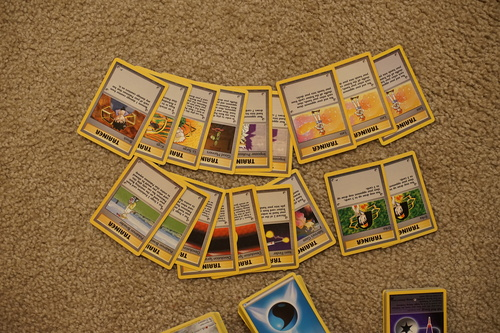

A mysterious DoA user challenged me to do space bokeh after seeing my leaf bokeh photo. I accepted the challenge. This aperture has one space ship (or planet) and 3 little stars.

Spoiler for 2 paragraphs from now: I now have enough doll stands for 4 1/3rd scale dolls. I'm trying to pose them together and make them all look natural but it's still a weakness of mine. Hina looks super stiff... I wasn't able to use the TV for eye contact due to Star Ocean: First Depature, but I did my best with what I had (a dying camera battery).
I found a large amount of pokemon cards at the thrift store! My case it binder unsnapped itself before I even put the new cards in so it seems I need to be on the lookout for another binder. My binder is worth its weight in cuteness! It's heavy ;_;

The cashier thought they were banana stands. She was very embarrassed when I told her they were for dolls.
I almost didn't buy it because I thought Ryan had it. He says he doesn't. He does now.
I think I own every CD by them I would ever want now.
I've become very curious about american Julian Casablancas after reading the engrish lyrics he wrote for Instant Crush.
I was bad and swapped out the cards with other sheets for the best collection of cute girls. All the sheets were worthless on average so I don't think it's a big deal.
The contents of the boltund tin were pokemon go set mostly, with a bunch of the mcdonalds 2021 cards. I was only able to go to mcdonalds once during those happy meals so thank u for donating these!! I also didn't buy any packs of my own for Pokemon GO!
The baggie had wizards cards and some from sets around 2015. The wizards cards were all in decent condition too. So strange. Ryan is going to beg me for a bunch of these to replace his more beat up cards. Overall, a very fun buy for just under $5 total.
A couple months ago I was complaining to a friend that I couldn't find any vocaloid new wave. Well, it exists and is a (optionally) free download. Thanks Astrophysics!
VolksUSA revealed their Holiday Greeting 2022 one-offs. Smiling Michele is a very good addition, but none of them seem to be particularly exciting. I was considering a one-off Sui/Souseiseki or Miruku/Kurumi for a DSD, but neither of them are my ideal faceup, so I will sit this one out. F-100 may be the prettiest of them, but her head sculpt will be cheap in a few years and she has those cat/elf ears. I'd like her a lot more if she didn't!
More dangerously, SD Severus Snape was announced. No photos yet. I do NOT want to order him through a proxy or a preorder so I will be crushed if he turns out to be gorgeous. PLEASE BE UGLY. Perhaps next year I'll buy Kinoko Juice's 58chan if they finally release her. I plan to make her Cheby's crush. No plans otherwise.
Migi released "Flora" a week ago. She's incredibly pretty! Luckily, I am the opposite of a fan of Migidoll's bodies and have no interest in hybriding again. Those elbows are hideous and I have multiple other problems with the body past that. I could never own such a body. If she came on the SDGr body I would be very tempted. I would have made her Liam's oneechan but then I'd also have to buy her a husband. It's a downward spiral from there.
I went through dA looking for stamps after seeing them on hiritai's page. I found some good ones! And some bad ones! There were a lot of doll ones that were of people's personal dolls. The only one I liked enough to take was Hayden's. I'm still thinking about that dang doll even after getting my own.